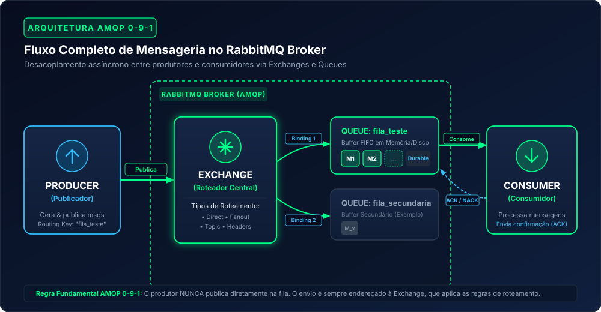
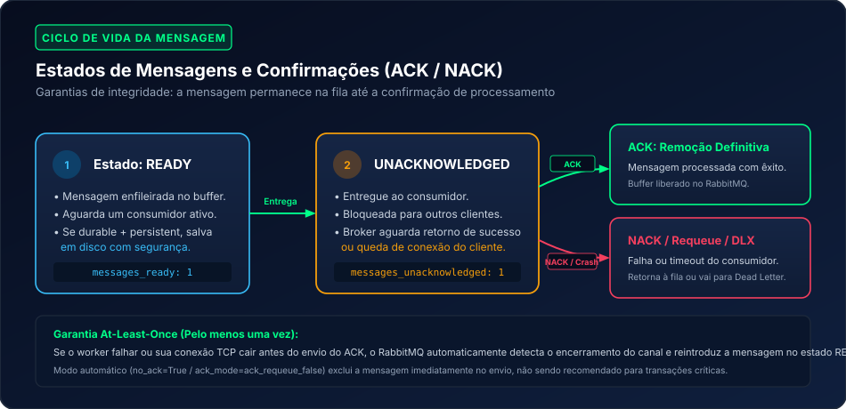
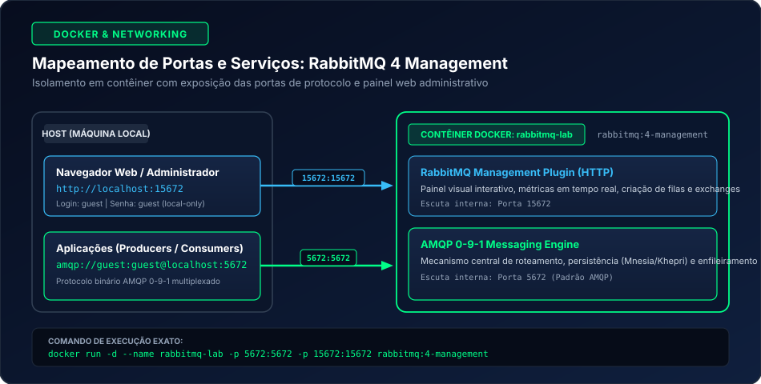
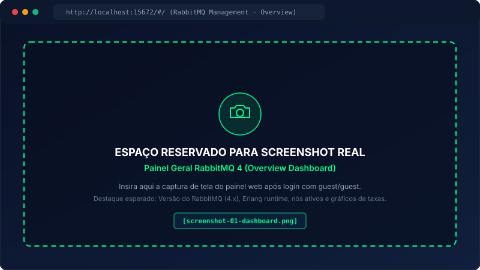
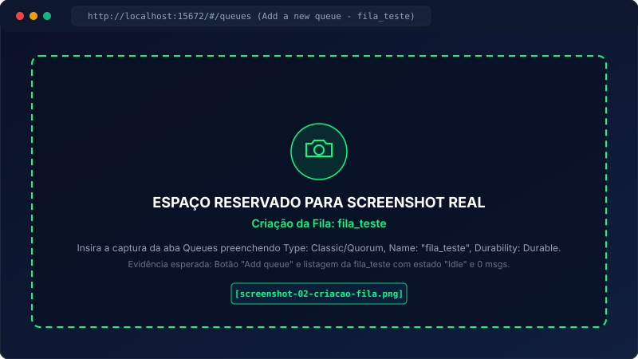
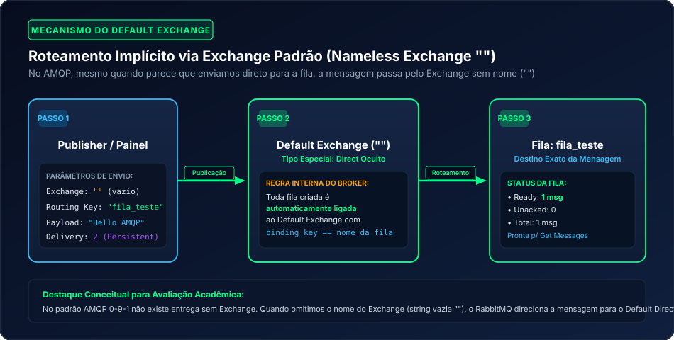
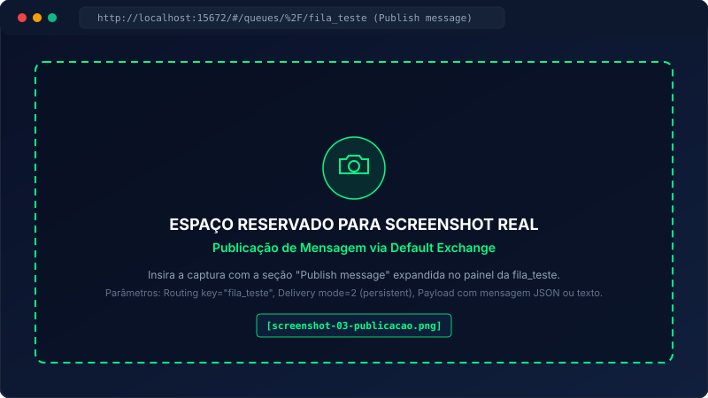
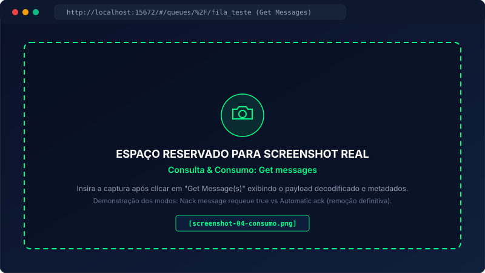

AMQP via Broker RabbitMQ: Arquitetura, Filas e Implementação Prática
Guia completo para compreensão teórica, orquestração com Docker, roteamento via Default Exchange e consumo confiável em sistemas distribuídos orientados a mensagens.
[Sistemas Distribuídos / Redes / Arquitetura]
[Nome do Aluno:Guilherme Moura / Matrículas]
[Nome do Professor:Phelipe Curty]
RabbitMQ 4 (rabbitmq:4-management)
01
Introdução ao Protocolo AMQP
O AMQP (Advanced Message Queuing Protocol) é um protocolo de camada de aplicação aberto e padronizado internacionalmente (pela OASIS e ISO/IEC 19464) concebido especificamente para comunicação assíncrona orientada a mensagens entre sistemas de computação heterogêneos.
Antes do surgimento do AMQP, a mensageria corporativa (conhecida genericamente como MOM — Message-Oriented Middleware) era dominada por soluções proprietárias fechadas (como IBM MQ e TIBCO). Tais tecnologias impunham forte acoplamento entre fornecedores e inviabilizavam a comunicação nativa direta entre aplicações escritas em ecossistemas distintos sem a criação de adaptadores complexos.
Protocolo Binário de Rede
Diferente de protocolos baseados em texto (como HTTP/1.1 ou STOMP), o AMQP opera com frames binários compactos, garantindo baixíssimo overhead de serialização, alta velocidade de tráfego e suporte a multiplexação de canais em conexões TCP persistentes.
Interoperabilidade Total
Como se trata de um padrão aberto de nível de protocolo (e não apenas uma API de linguagem como JMS no Java), clientes em C#, Go, Python, Node.js, Rust e Java conversam entre si com fidelidade absoluta de payload e metadados.
Desacoplamento Temporal e Espacial
O produtor não precisa saber o endereço IP nem a existência do consumidor no instante do disparo da mensagem. O broker armazena e protege os dados até que os consumidores estejam online e aptos a processá-los.
💡
Diferença Paradigmática: AMQP vs HTTP REST
No modelo síncrono HTTP/REST tradicional (Request-Response), o cliente bloqueia ou depende da resposta imediata do servidor receptor (acoplamento temporal e de disponibilidade). Se o servidor receptor estiver fora do ar ou sobrecarregado, o cliente falha. No AMQP, a comunicação é declarada por eventos e tarefas assíncronas: o broker atua como intermediário infalível, absorvendo oscilações bruscas de carga (load smoothing).
02
O que é um Message Broker e o Papel do RabbitMQ
Um Message Broker (ou corretor de mensagens) é um componente arquitetural intermediário encarregado de receber mensagens de sistemas emissores, validar suas regras de endereçamento, enfileirá-las com segurança em buffers e despachá-las aos destinos corretos.
O RabbitMQ é o broker de mensageria de código aberto mais amplamente adotado no mundo da engenharia de software moderno. Desenvolvido sobre a plataforma Erlang/OTP, ele foi concebido com os princípios que tornaram o setor de telecomunicações referência global em confiabilidade:
Alta Concorrência Massiva: Erlang opera com processos leves gerenciados em espaço de usuário (BEAM VM), permitindo que centenas de milhares de conexões, canais e filas coexistam com consumo mínimo de memória.
Tolerância a Falhas e Recuperação (Crash-Only Design): A árvore de supervisão (supervision trees) do OTP reinicia componentes que apresentam falhas sem derrubar o broker ou perder mensagens persistidas.
Suporte Nativo ao AMQP 0-9-1: O RabbitMQ é a implementação de referência mundial para o perfil AMQP 0-9-1, além de suportar AMQP 1.0, MQTT, STOMP e RabbitMQ Streams via plugins.
Característica
Comunicação Síncrona Direta (HTTP/REST)
Mensageria Assíncrona com RabbitMQ Broker
Acoplamento Temporal
Alto: Ambas as partes precisam estar ativas e disponíveis simultaneamente.
Nenhum: O produtor envia e segue sua execução; o consumidor processa no seu tempo.
Resiliência a Falhas
Baixa: Se o serviço destino falhar, a requisição é perdida a menos que haja retentativas ativas.
Alta: O broker retém a mensagem na fila até que o consumidor se recupere e confirme o ACK.
Controle de Vazão (Backpressure)
Difícil: O receptor pode sofrer saturação de conexões e colapsar sob surtos de requisições.
Nativo: Consumidores controlam sua velocidade de ingestão via prefetch count (QoS).
Topologia de Entrega
Ponto-a-ponto (1:1 direto).
1:1 (Fila de Tarefas), 1:N (Pub/Sub Fanout), Roteamento por Tópicos (Topic) e Cabeçalhos.
03
Arquitetura AMQP 0-9-1 Detalhada
A especificação AMQP 0-9-1 estabelece um modelo conceitual rigoroso e modular. Uma das confusões mais comuns de desenvolvedores iniciantes é acreditar que o produtor envia mensagens diretamente para a fila. No AMQP 0-9-1 isso nunca acontece: produtores só publicam mensagens em Exchanges!
Diagrama Arquitetural AMQP 0-9-1
assets/amqp-architecture.svg

Figura 1: Arquitetura completa de roteamento no RabbitMQ — Produtores publicam em Exchanges, que avaliam Bindings para entregar a Queues consumidas por Consumers.
Os Cinco Pilares do Modelo
1. Producer (Publicador)
A aplicação cliente que gera dados ou eventos de negócio e os despacha ao broker. O produtor endereça sua mensagem especificando o Exchange de destino, uma Routing Key (chave de roteamento) e propriedades adicionais (como persistência, expiração e cabeçalhos).
2. Exchange (Roteador Central)
O componente lógico responsável por inspecionar os metadados da mensagem (Routing Key, Headers) e decidir para quais filas aquela mensagem deve ser clonada e despachada. Existem quatro tipos padronizados: Direct, Fanout, Topic e Headers, além do especial Default Exchange.
3. Binding (A Regra de Ligação)
A relação ou "ponte" configurada entre uma fila e um Exchange. O Binding define a regra ou chave de associação (binding key) sob a qual a fila aceita receber mensagens encaminhadas por aquele Exchange específico.
4. Queue (Fila de Buffer)
Estrutura FIFO (First-In, First-Out) em memória ou disco que armazena mensagens em sequência ordenada até que consumidores as processem. Uma fila possui nome único por Virtual Host e atributos como durabilidade e expiração.
5. Consumer (Consumidor)
Aplicação trabalhadora (worker) que se inscreve em uma fila específica para receber, processar a carga útil (payload) e emitir o sinal de confirmação (ACK) para liberação da memória no broker.
Canais (Channels) vs Conexões TCP
Estabelecer conexões TCP/IP completas exige múltiplos handshakes de rede, autenticações de credenciais e negociação de parâmetros TLS. Em ambientes com dezenas de threads, abrir uma conexão TCP por thread esgotaria portas e recursos do sistema operacional.
O AMQP resolve essa restrição implementando Channels: conexões lógicas leves e bidirecionais multiplexadas dentro de uma única conexão TCP física real. Uma única conexão pode hospedar centenas de canais simultâneos isolados com custo computacional desprezível.
04
Funcionamento das Filas, Mensagens e Confirmações (ACK)
A confiabilidade corporativa do RabbitMQ apoia-se em mecanismos determinísticos de proteção de dados contra falhas de hardware, reinicializações de contêineres e quedas inesperadas de serviços clientes.
Ciclo de Vida da Mensagem e Máquina de Estadosassets/queue-lifecycle.svg

Figura 2: Estados Ready, Unacknowledged e o impacto do ACK manual vs NACK/Requeue.
Propriedades Críticas de Durabilidade
Queue Durability (Fila Durável): Declarar uma fila com durable: true garante que os metadados da fila sobrevivam a uma reinicialização do broker RabbitMQ. Se a fila for declarada como transient (não-durável), ela será eliminada caso o servidor pare.
Message Persistence (Mensagem Persistente): Para que a mensagem sobreviva à reinicialização, o produtor precisa marcá-la com o modo de entrega delivery_mode: 2 (persistente). Mensagens persistentes dentro de filas duráveis são gravadas em journal de disco pelo broker.
Confirmações de Publicador (Publisher Confirms): Extensão AMQP em que o broker envia um recibo de confirmação assíncrono ao produtor indicando que a mensagem foi escrita com segurança em disco ou roteada às filas duráveis.
O Mecanismo de Acknowledgment (ACK)
Quando um consumidor solicita mensagens de uma fila, o RabbitMQ monitora o ciclo de atendimento através do protocolo de reconhecimento:
Basic.Ack (Positivo)
O consumidor processou o trabalho com êxito e notifica o broker. O RabbitMQ remove definitivamente a mensagem da fila, liberando espaço em memória e disco.
Basic.Nack / Basic.Reject
O consumidor encontrou uma falha de negócio ou infraestrutura e rejeita a mensagem. Se o parâmetro requeue=true for passado, ela retorna ao topo da fila para ser reentregue; se requeue=false, a mensagem é descartada ou despachada para uma Dead Letter Exchange (DLX).
Auto-Ack vs Manual Ack
No modo autoAck: true, o broker considera a mensagem entregue no milissegundo em que ela sai pela placa de rede. Se a aplicação quebrar antes de processá-la, a mensagem é perdida para sempre. Em ambientes acadêmicos e profissionais sérios, utiliza-se sempre Manual Ack (autoAck: false).
05
Instalação do RabbitMQ 4 com Docker
Para este laboratório prático acadêmico, utilizamos a versão mais moderna do broker: RabbitMQ 4, empacotada na imagem oficial do Docker Hub que inclui o plugin de gerenciamento gráfico web (Management Plugin).
Mapeamento de Portas e Topologia Dockerassets/docker-ports.svg

Figura 3: Separação de canais: porta 5672 para clientes AMQP e porta 15672 para gerenciamento HTTP web.
O Comando de Inicialização
Execute o comando abaixo no terminal da sua máquina host (PowerShell, Bash ou CMD):
docker terminal
docker run -d --name rabbitmq-lab -p 5672:5672 -p 15672:15672 rabbitmq:4-management
Detalhamento dos Parâmetros do Comando
Parâmetro
Finalidade Técnica
-d (detach)
Executa o contêiner em segundo plano no daemon do Docker, liberando o terminal.
--name rabbitmq-lab
Atribui um identificador amigável ao contêiner para facilitar comandos como docker logs ou docker stop.
-p 5672:5672
Mapeia a porta nativa do protocolo binário AMQP 0-9-1 da máquina host para a porta interna do contêiner. É por esta porta que produtores e consumidores de código conectam-se.
-p 15672:15672
Mapeia a porta HTTP do servidor web embutido do RabbitMQ Management Plugin. Permite abrir a interface administrativa visual no navegador.
rabbitmq:4-management
Tag da imagem oficial contendo o RabbitMQ 4 com Erlang 26/27 e o plugin Web Management pré-habilitado.
⚠️
Segurança e Escopo das Credenciais guest / guest
O RabbitMQ possui, por padrão de fábrica, o usuário administrativo guest com senha guest. Por rigor de segurança da especificação, este usuário só tem permissão de autenticação a partir de conexões de loopback local (localhost / 127.0.0.1). Em ambientes corporativos de produção, deve-se criar usuários dedicados com permissões explícitas em Virtual Hosts isolados e desativar a conta guest.
Acesso ao Painel Administrativo
Com o contêiner rodando, abra o navegador e acesse:
Espaço para Captura Real: Overview Dashboardassets/placeholder-dashboard.svg

Figura 4: Espaço reservado para inclusão da captura de tela do painel web após autenticação com guest/guest.
06
Criação Prática da Fila fila_teste
Para o nosso experimento acadêmico, criamos uma fila padronizada denominada fila_teste através da interface web do RabbitMQ Management.
1
Navegue até a Aba Queues
No menu superior do painel administrativo, clique na guia Queues (Filas). Essa página lista todas as filas ativas no Virtual Host selecionado (por padrão, /).
2
Expanda a Seção "Add a new queue"
Clique no bloco retrátil Add a new queue para exibir o formulário de declaração de fila.
3
Configure os Parâmetros da Fila
Preencha os campos com os valores técnicos:
Type:Classic (ou Quorum se desejar consenso distribuído Raft). Manter Classic para fins acadêmicos gerais.
Name:fila_teste (atenção para caracteres minúsculos sem espaços).
Durability:Durable (garante que a fila sobreviva a reinicializações).
Auto delete:No.
Arguments: Deixar em branco (sem TTL ou limites adicionais por enquanto).
4
Finalize a Declaração
Clique no botão Add queue. A fila aparecerá imediatamente na tabela com contadores de mensagens zerados (Ready: 0, Unacked: 0, Total: 0).
Espaço para Captura Real: Criação da Filaassets/placeholder-queue-create.svg

Figura 5: Espaço reservado para screenshot do formulário de criação da fila_teste preenchido e confirmado.
07
Publicação de Mensagens e o Mecanismo do Default Exchange
Um dos conceitos mais refinados do AMQP 0-9-1 é o funcionamento do Default Exchange (Exchange Padrão, também denominado tecnicamente na especificação como Nameless Exchange ou Exchange de nome vazio "").
Mecanismo do Default Exchangeassets/default-exchange-flow.svg

Figura 6: Roteamento implícito do Default Exchange: toda fila criada é automaticamente vinculada a ele com uma chave igual ao próprio nome da fila.
Por Que o Default Exchange é Tão Importante?
No AMQP, todo broker cria automaticamente ao inicializar um Exchange do tipo direct sem nome (string vazia ""). A especificação impõe uma regra obrigatória:
📌
Regra Fundamental da Especificação AMQP 0-9-1:
"Toda fila criada no broker é automaticamente vinculada (bound) ao Default Exchange com uma chave de roteamento (binding key) rigorosamente idêntica ao nome da própria fila."
Assim, quando publicamos uma mensagem apontando para o Exchange "" (vazio) e definimos a Routing Key como fila_teste, o Default Exchange encaminha a mensagem com precisão cirúrgica diretamente para a fila fila_teste!
Passo a Passo da Publicação no Painel Web:
1
Acesse a Fila fila_teste
Na lista de filas, clique no nome fila_teste para abrir sua página detalhada de monitoramento.
2
Expanda a Seção "Publish message"
Role a tela para baixo até encontrar o acordeão Publish message.
3
Defina as Propriedades e o Payload
Observe que o campo de exchange já está implicitamente associado à fila, ou pode ser preenchido como vazio com a routing key correspondente:
Routing key:fila_teste
Delivery mode:2 - Persistent (assegura escrita em disco)
Headers: Deixar vazio ou adicionar contentType: application/json
Payload: Digite a mensagem, por exemplo: {"id": 101, "evento": "MATRICULA_CONFIRMADA", "aluno": "Academico 01", "timestamp": "2026-11-11T16:00:00Z"}
4
Clique em "Publish message"
O broker exibirá um aviso flutuante verde Message published. Na parte superior da página, a métrica Messages: Ready mudará instantaneamente de 0 para 1!
Espaço para Captura Real: Publicação de Mensagemassets/placeholder-publish.svg

Figura 7: Espaço reservado para captura de tela do painel demonstrando o payload publicado e o alerta "Message published".
08
Recebimento, Inspeção e Confirmação de Mensagens
Uma vez que a mensagem reside com segurança no buffer da fila_teste (com status Ready: 1), qualquer consumidor autorizado pode requisitá-la ou escutá-la.
No próprio painel de administração web do RabbitMQ, existe uma ferramenta de diagnóstico e teste manual chamada Get messages, que permite inspecionar ou drenar mensagens sem necessidade imediata de compilar código externo.
Como Utilizar a Seção "Get messages":
1
Localize a Seção Get messages
Abaixo da área de publicação, abra o painel retrátil Get messages.
2
Selecione a Política de Requeue / Ack
O campo Ack Mode oferece opções fundamentais:
Nack message requeue true: O painel lê o conteúdo da mensagem e solicita ao RabbitMQ que a mantenha na fila (requeue). Ideal para inspeção sem consumir.
Automatic ack: O painel lê a mensagem e envia o ACK positivo imediatamente. A mensagem é consumida e expurgada da fila (o contador Ready volta a 0).
Reject requeue false: Rejeita e descarta a mensagem.
3
Clique em "Get Message(s)"
O painel exibe um bloco com todos os metadados técnicos recebidos: Exchange, Routing Key, Redelivered (booleano indicando se já foi reentregue), Properties e o corpo do Payload decodificado em UTF-8.
Espaço para Captura Real: Inspeção e Consumoassets/placeholder-consume.svg

Figura 8: Espaço reservado para captura de tela dos dados inspecionados via Get messages (Payload, Headers e contadores atualizados).
09
Implementação Prática com Código de Aplicação
A interface web do RabbitMQ é perfeita para aprendizado e administração, mas na engenharia de software real a comunicação é realizada por microsserviços via bibliotecas clientes AMQP. Apresentamos implementações completas e resilientes em duas linguagens amplamente utilizadas no meio acadêmico e no mercado:
A arquitetura de mensageria baseada em AMQP e RabbitMQ é aplicada nos principais pilares de sistemas corporativos modernos:
Processamento em Segundo Plano
Tarefas computacionalmente pesadas (como renderização de vídeos, geração de relatórios PDF, processamento de inteligência artificial ou envio em lote de e-mails) são delegadas a filas assíncronas sem bloquear o usuário na tela da aplicação web.
Amortecimento de Carga (Load Leveling)
Em eventos com picos imprevisíveis (Black Friday, inscrições universitárias, votações), a fila atua como um reservatório elástico. O banco de dados e os serviços internos continuam operando em sua capacidade ideal e constante sem sobrecarga.
Orquestração em Microsserviços
Permite coordenar transações distribuídas (padrão Saga Coreografada) e publicar eventos de domínio (Domain Events) onde múltiplos subsistemas reagem a uma única ação sem conhecer os detalhes internos uns dos outros.
Distribuição de Carga Competitiva
Múltiplas instâncias de consumidores podem subscrever a mesma fila (Competing Consumers Pattern). O RabbitMQ distribui as mensagens de modo Round-Robin justo respeitando o prefetch de cada trabalhador, escalando horizontalmente em segundos.
11
Conclusão e Referências Oficiais
O estudo do protocolo AMQP 0-9-1 em conjunto com o broker RabbitMQ 4 demonstra de maneira prática e inequívoca os benefícios do desacoplamento de software. Ao compreender que os publicadores interagem exclusivamente com Exchanges e que as filas atuam como buffers gerenciados com garantias transacionais de persistência e confirmação manual (ACK), o estudante de engenharia e tecnologia adquire a base para projetar sistemas distribuídos resilientes a qualquer escala.
A separação cirúrgica entre a porta de dados do protocolo (5672) e a porta HTTP do painel de administração (15672), bem como o roteamento inteligente via Default Exchange com chaves de roteamento explícitas, sintetizam os princípios de design de redes industriais de alta fidelidade.
Referências Oficiais e Bibliografia Técnica
OASIS:Advanced Message Queuing Protocol (AMQP) Version 0-9-1 Specification. OASIS Open Standard. Disponível em: amqp.org.
VMware Tanzu / Broadcom:RabbitMQ Official Documentation: Documentation, Guides, and Tutorials. Disponível em: rabbitmq.com/docs.